CS180 · Project 3
Fun with
Flow Models
This project starts with noise and turns it into images. Part A uses a pretrained flow model to remove noise, edit photographs, and create visual illusions. Part B trains a smaller model from scratch to generate handwritten digits.
Click any result to view it larger. Image enlargement is only available on the website; all results are also shown directly on the page and remain visible in the PDF.
Website: https://andreiberkeley.github.io/cs180/3/
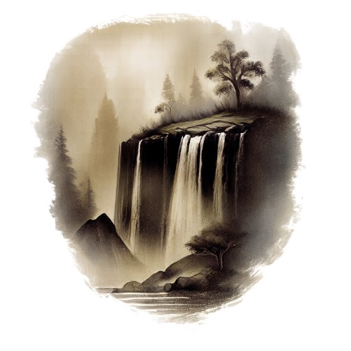
Part A
Exploring the power of flow models
Part A uses the pretrained PixNerd model. Each input is cropped around its center and resized to 512 × 512. The RGB values are converted to [−1, 1]. Time runs from pure noise at t = 0 to a clean image at t = 1.
Part A · 1.1
Constructing noisy training inputs
The noisy input is a weighted combination of the original portrait, x₁, and Gaussian noise, ε. The same noise is reused at all three times. At t = 0.25, noise makes up most of the input. Increasing t keeps more of the portrait, making the face and background easier to recognize.
xt = (1 − t)ε + tx1
Seed 180Shared noise at all three times

Part A · 1.2
Classical denoising
Each noisy input is first divided by t so the original image has a weight of one. A Gaussian blur then smooths nearby pixels to reduce the noise. Sigma controls the amount of blur: a larger value gives stronger smoothing. Values of 1, 2, 4, 8, and 16 were tested, keeping the one with the lowest mean squared error (MSE) against the original.
More noise requires a stronger blur in these results. Nevertheless, removing the noise also removes details from the eyes, hair, and background.

t = 0.50 · selected sigma 4


t = 0.75 · selected sigma 2

Part A · 1.3
One-step denoising
The model takes the noisy image, its time, and a text prompt, then predicts a velocity: how the pixel values should change as time increases. Multiplying this prediction by the remaining time gives an estimate of the clean image in one step. All three results use “a high quality photo”.
Compared with Gaussian blur, the face has much clearer features, especially at t = 0.25. However, some of these features are different from the original. A result can look like a convincing photograph without recovering the exact person.
x̂1 = xt + (1 − t)vθ(xt, t, c)
t = 0.25


t = 0.50


t = 0.75

Part A · 1.4
Visualizing velocity
Since the original image and the added noise are known, the exact update can be calculated and compared with the model's prediction. Both updates describe the change needed to reach the clean image from the noisy input. The error is calculated at each pixel by squaring the RGB differences, averaging over the three channels, and taking the square root.
The update images share one display scale, with zero change shown as middle gray. The error maps also share one scale: dark areas have less error and bright areas have more. This makes the three times easier to compare. Differences remain especially visible around the face and hair.
Predicted update = (1 − t)v̂
Ground-truth update = (1 − t)(x1 − ε) = x1 − xt
Error = sqrt(meanRGB((predicted update − ground-truth update)²))
Ground-truth update = (1 − t)(x1 − ε) = x1 − xt
Error = sqrt(meanRGB((predicted update − ground-truth update)²))
t = 0.25
t = 0.50
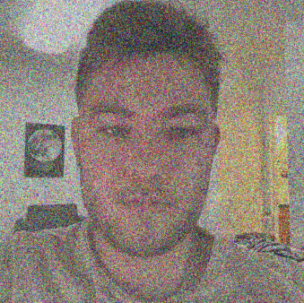
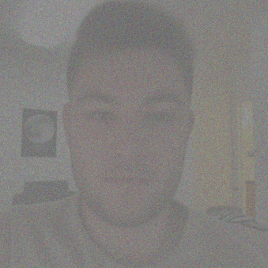
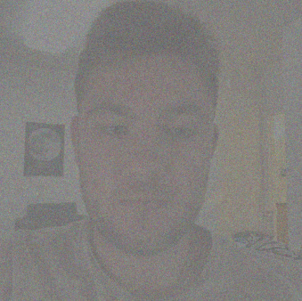
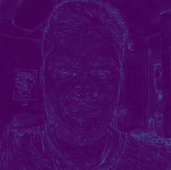
t = 0.75
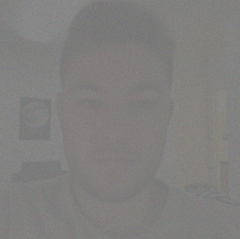
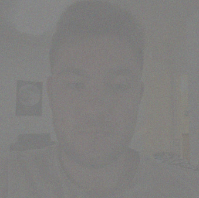
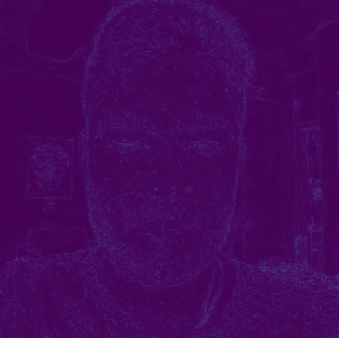
Part A · 1.5
Iterative denoising with Euler sampling
Euler sampling repeats the prediction in smaller steps. At each step, the current velocity is multiplied by h and added to the image. The model then predicts a new velocity using the updated image and time. Starting at t = 0.50 with h = 0.02 gives 25 updates. The initial input and every fifth update are shown below. The sampler shortens the final step when necessary to stop at t = 1.
xt+h = xt + hvθ(xt, t, c)

Comparing the denoising methods


| Method | MSE |
|---|---|
| Gaussian blur | 0.016243 |
| One-step denoising | 0.004907 |
| Euler denoising | 0.005997 |
Both model-based methods keep much more detail than the Gaussian blur. For this particular portrait, the one-step estimate has a slightly lower pixel error than Euler. Taking more steps therefore does not guarantee a closer reconstruction of the exact original image.
Part A · 1.6 and 2.1
Generating images and adding guidance
Generating an image starts from pure Gaussian noise at t = 0. Classifier-free guidance evaluates this same image and time twice: once with the photo prompt and once with an empty prompt. The difference strengthens the effect of the requested text. For Part A, w = 0 gives ordinary conditional generation, while the guided results use w = 7.
vCFG = vc + w(vc − vu)
Prompt: a high quality photoStep size 0.0250 Euler updates
1.6 · Generation without CFG
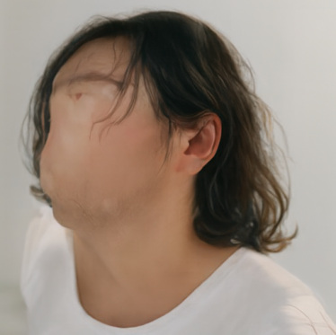
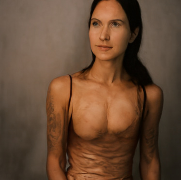
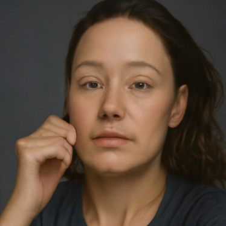
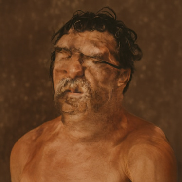
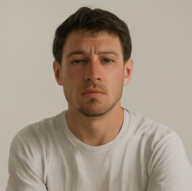
2.1 · Generation with CFG
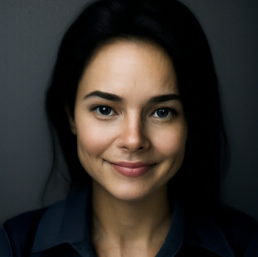
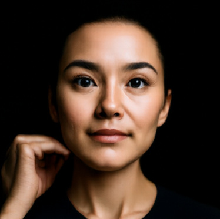
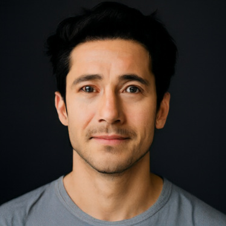
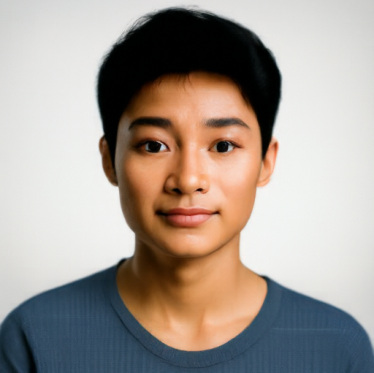
The generic photo prompt mainly produces portraits in both cases. Without CFG, several faces look less natural; seed 180, for example, has a smooth, painted-looking face. With CFG, the facial features are clearer and the results look more like photographs. The portraits also become more similar in subject and framing. Each column uses the same seed in both rows, keeping the starting noise fixed.
Part A · 3.1
Image-to-image editing
To edit an existing image, noise is added using the same interpolation formula, and the sampler continues from the selected starting time to t = 1. A smaller starting time adds more noise and allows larger edits. A larger starting time preserves more of the input. The original and all seven required starting times are shown for the Campanile and two selected test images.
Step size 0.02CFG w = 7Seed 180Empty-string unconditional prompt
Campanile
Prompt: “a high quality photo”
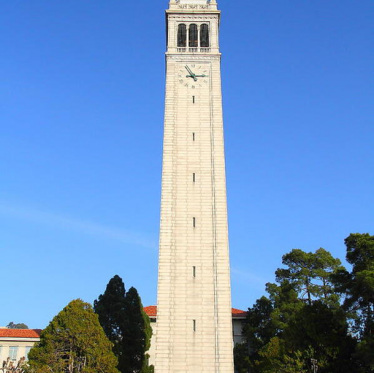
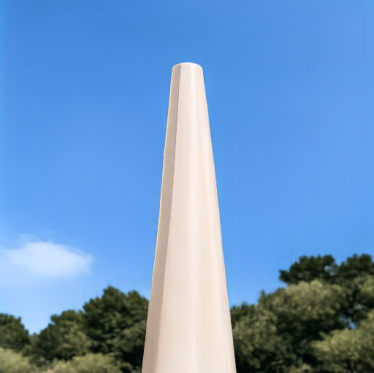
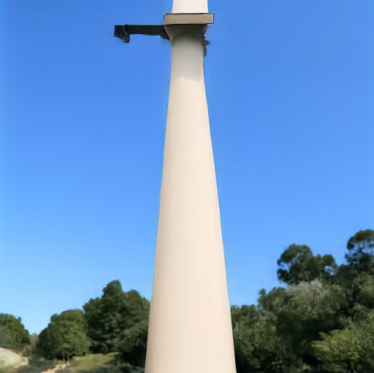
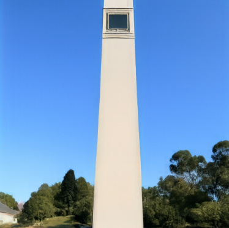
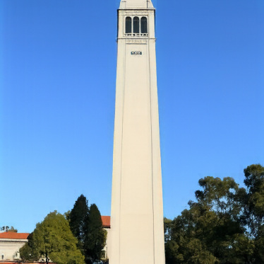
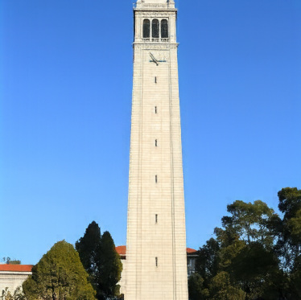
At low starting times, the result still suggests a tower, but its shape and details change considerably. At t = 0.25 and 0.50, the Campanile becomes much closer to the original.
Portrait
Prompt: “a high quality photo”


The lower starting times produce a different person rather than a reconstruction of my face. Increasing the time keeps more of the original face and room.
Lion
Prompt: “a high quality photo”

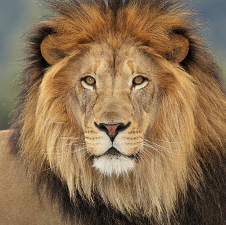


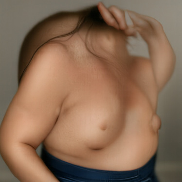

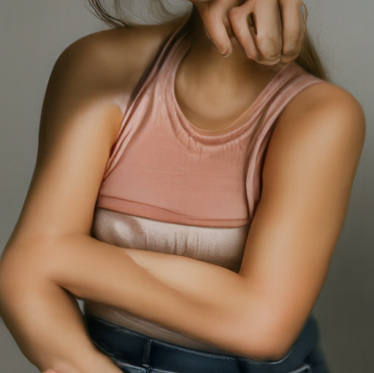

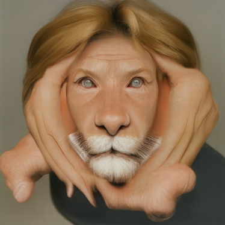

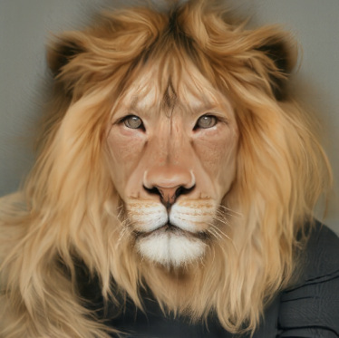

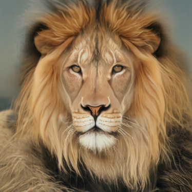

With enough noise, the generic photo prompt can turn the lion into a person. The original animal becomes much more recognizable at the larger starting times.
Part A · 3.1 continued
Editing web images and drawings
The same procedure is applied to a downloaded wolf image and two drawings: a house and a flower. All three use the generic photo prompt and the same seven starting times.
Step size 0.02CFG w = 7Seed 180Empty-string unconditional prompt
Downloaded image · Wolf
Prompt: “a high quality photo”


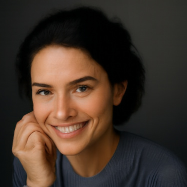

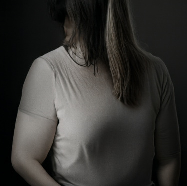


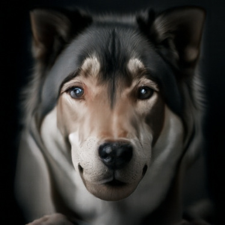

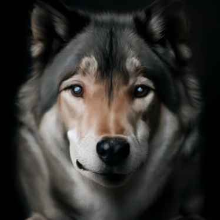

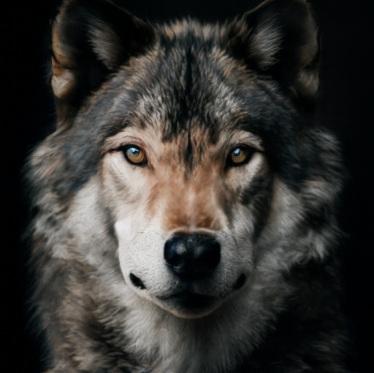

The low starting times again produce people rather than the intended animal. As more of the input is kept, the result becomes dog-like and then closer to the original wolf.
Hand-drawn image · House
Prompt: “a high quality photo”

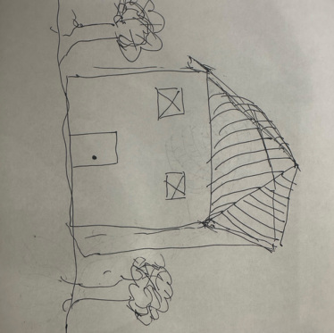


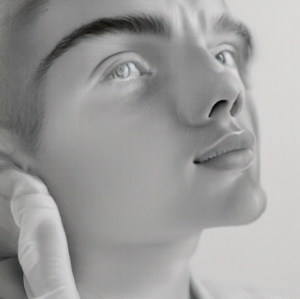

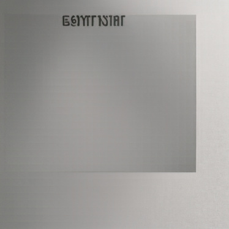

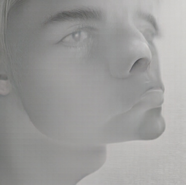

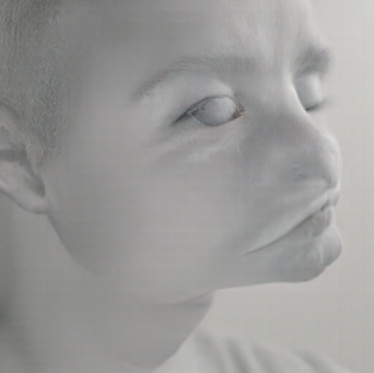

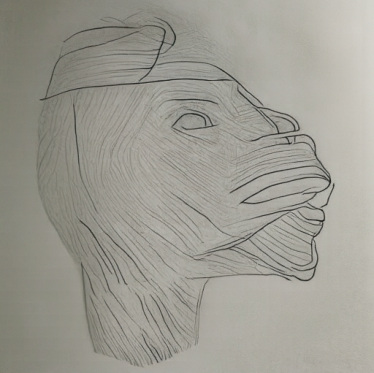

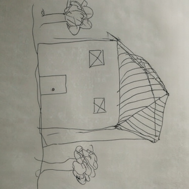
This did not turn into a convincing photograph of a house. At low times, the model often generates faces or unrelated objects. At higher times, it mostly keeps the drawing instead of making it realistic.
Hand-drawn image · Flower
Prompt: “a high quality photo”


The flower drawing has a similar problem. The generic prompt does not clearly identify the intended subject, while t = 0.50 keeps much of the original drawing. Adding noise alone is not enough to get the desired photograph.
Part A · 3.2
Text-guided image editing
The sampler is unchanged, but the generic photo prompt is replaced with a description of the desired edit. Each image keeps the same seven starting times and the same starting noise as before, so the effect of the prompt is easier to compare.
Step size 0.02CFG w = 7Seed 180Empty-string unconditional prompt
Campanile → Rocket
Prompt: “a photograph of a rocket on a launch pad”


The rocket prompt changes the tower into a rocket most clearly at the lower starting times. At larger times, the original tower and its surroundings remain more visible.
Portrait → Astronaut monkey
Prompt: “a photograph of an astronaut monkey”


At low times, the astronaut monkey replaces most of the original portrait. The middle values mix the requested subject with the original framing, while the larger values keep more of my face.
Lion → Dog and cat chimera
Prompt: “a photograph of a pet dog and cat chimera”


The lower starting times follow the dog-and-cat prompt more strongly. As the starting time increases, the lion's original face becomes harder to change.
Part A · 3.3
Visual anagrams
At each Euler step, one velocity prediction uses the upright image and the first prompt. A second uses the image rotated by 180 degrees and the second prompt. That second prediction is rotated back, and the two velocities are averaged before updating the image.
v = [vCFG(x, t, ca) + R(vCFG(R(x), t, cb))] / 2
R rotates both spatial axes by 180°
R rotates both spatial axes by 180°
Step size 0.02CFG w = 7Seeds 180 and 181Empty-string unconditional prompt
Old man / Campfire


Mountain village / Horse


The first image suggests an old man's face upright and people around a campfire after rotation. The second combines the mountain village with a horse, but the separation is less convincing: parts of the horse are already visible in the upright view. Each pair shows the same generated image, rotated by 180 degrees, rather than two separately generated results.
Part A · 3.4
Hybrid images
Both prompts predict a velocity for the same image and time. The low frequencies of the distant prompt are combined with the high frequencies of the close-up prompt. The combined velocity is then used in each Euler update.
v = lowpass(va) + vb − lowpass(vb)
Step size 0.02CFG w = 7Low-pass sigma 16Gaussian kernel 265 × 265
Skull / Waterfall
Close-up prompt: “a lithograph of a waterfall”
Distant prompt: “a lithograph of a skull”

Cat / Forest
Close-up prompt: “a lithograph of a forest”
Distant prompt: “a lithograph of a cat”

The waterfall is clear up close, while its overall shape suggests a skull in the smaller view. The cat and forest result is weaker. The trees roughly suggest the outline of a head, but it still looks mostly like a forest when reduced. The method uses the same low- and high-frequency idea as Project 2; the difference is that the velocity predictions are combined at every step, rather than combining two finished images.
Part B
Flow matching from scratch
Part B builds and trains smaller UNets on MNIST, a dataset of handwritten digits. Each grayscale image is 28 × 28, with pixel values in [0, 1]. The models use the 60,000 training images, and the denoising examples come from the separate test set.
Part B · 1.1, 1.2, and 1.2.1
Training a single-step denoising UNet
The UNet first reduces the image size, then brings it back to the original resolution. Skip connections pass information from the earlier blocks to the matching upsampling blocks, helping keep details that could otherwise be lost. The blocks use convolutions, batch normalization, and GELU activations.
During training, Gaussian noise with sigma 0.5 is added to each batch. New noise is generated at every iteration. The network predicts the clean digit and minimizes the mean squared difference between its prediction and the original.
z = x + σε
Loss = mean((Dθ(z) − x)²)
Loss = mean((Dθ(z) − x)²)
28 × 28Input and first block14 × 14 → 7 × 7Downsample1 × 1 → 7 × 7Pool, then unflatten14 × 14 → 28 × 28Upsample and output
Hidden dimension 128Batch size 256Adam learning rate 0.00015 epochsTraining sigma 0.5


After one epoch, most digits are already recognizable. By epoch 5, the strokes look cleaner and more consistent. The loss drops quickly at the start and then improves more gradually.
Part B · 1.2.2
Testing other noise levels
The denoiser was only trained with sigma 0.5. Here, the same test digit and noise pattern are reused while sigma changes from 0 to 1.
The digit stays recognizable across most of the range. At sigma 1.0, extra strokes and marks in the background become more noticeable. With more noise, there is less useful information left about the original digit.

Part B · 1.2.3
Trying to denoise pure noise
A new UNet is trained with pure Gaussian noise as the input and clean MNIST digits as the targets. Unlike the previous experiment, the input gives no information about which digit it should reconstruct.
The results become similar blurry shapes instead of different digits. When the input gives no clue about the target, predicting the average training image minimizes the expected squared error. This explains why the outputs look like several digits placed on top of each other.
Fresh UNetHidden dimension 1285 epochsAdam learning rate 0.0001Batch size 256


Part B · 2.1, 2.2, and 2.3
Training a time-conditioned flow model
This UNet predicts the velocity from noise toward a digit instead of predicting the clean image directly. For each training example, a new noise image x₀ and a random time in [0, 1] are chosen. They are combined with the clean digit x₁ using the formula below. Two fully connected blocks turn the time into values that multiply the features at two stages of upsampling, so the network knows how much noise to expect.
The training target is x₁ − x₀, the velocity along the straight path from noise to the digit. Adam starts with a learning rate of 0.01. An exponential scheduler gradually lowers it by multiplying it by 0.11/10 after every epoch. Generation starts from noise and takes 50 Euler steps to t = 1.
xt = (1 − t)x0 + tx1
Target velocity = x1 − x0
Loss = mean((uθ(xt, t) − (x1 − x0))²)
Target velocity = x1 − x0
Loss = mean((uθ(xt, t) − (x1 − x0))²)
Hidden dimension 64Batch size 6410 epochsAdam initial learning rate 0.0150 Euler sampling steps


After one epoch, the outputs contain broken or unclear strokes. By epochs 5 and 10, many more samples resemble handwritten digits, although some remain ambiguous. Each checkpoint is sampled from the same starting noise.
Part B · 2.4, 2.5, and 2.6
Adding class conditioning
The label is represented by a one-hot vector: ten entries, with a one at the requested digit and zeros elsewhere. Two additional fully connected blocks turn this vector into class-conditioning values. At two stages of upsampling, the class values multiply the features and the time values are added. For 10% of training examples, the class vector is set entirely to zero so the model also learns to predict without a digit label.
Training uses the same Adam settings and scheduler as the time-conditioned model. During sampling, the conditional and unconditional velocities are evaluated at the same image and time. Part B uses the formula below with gamma = 5. Its guidance convention differs from Part A, where the conditional velocity is the starting point.
vguided = vu + γ(vc − vu), γ = 5
Hidden dimension 64Batch size 6410 epochsClass dropout 0.1CFG gamma 5300 Euler steps


Class conditioning makes it possible to request a specific digit. Most outputs are already recognizable after one epoch and become cleaner by epochs 5 and 10. Compared with the time-only results, the requested classes are much clearer. However, this is not a comparison of class conditioning alone: these samples also use CFG and 300 Euler steps instead of 50.
Part B · 2.6 continued
Removing the learning-rate scheduler
A second class-conditioned model is trained from scratch without an exponential scheduler. To compensate, the learning rate is lowered from the scheduled run's initial 0.01 to a constant 0.003. The architecture, batch size, ten training epochs, class dropout, and sampling settings are kept the same.
Independent modelConstant learning rate 0.00310 epochsSame architecture and batch sizeSame sampling seed 180


Both runs produce recognizable digits after ten epochs. The model without the scheduler still has a few irregular strokes, but the results look comparable overall. Using a lower constant learning rate allows it to train without the gradual decrease used in the first run. This is a visual comparison, not a measured generation-quality score.